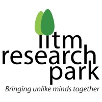

| Equipment | Laboratory | Department | Professor Incharge | Operator | Contact |
|---|

IIT Madras — Labs & Equipment
Research Facilities Directory
-Equipment
-Departments
-Laboratories

Research Facilities Directory
| Equipment | Laboratory | Department | Professor Incharge | Operator | Contact |
|---|